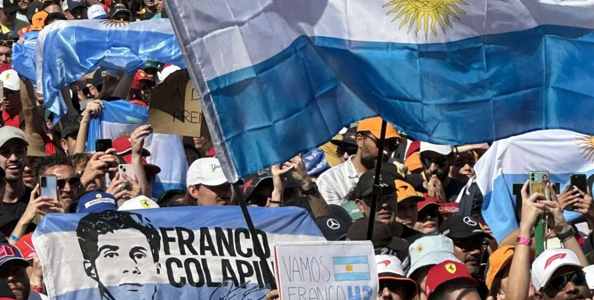

El orgullo de una bandera
Franco se convirtió en un símbolo de orgullo para muchos argentinos. Su presencia en la Fórmula 1 despertó una enorme pasión por el automovilismo y volvió a poner la bandera argentina en lo más alto del deporte.

El apoyo que nunca falta
Desde sus primeros años en Europa hasta su llegada a la Fórmula 1, Franco contó con el acompañamiento de seguidores que confiaron en su talento y celebraron cada uno de sus logros.

Un sueño compartido
Su camino inspira a nuevas generaciones de jóvenes que sueñan con llegar al automovilismo profesional. Porque a veces, el sueño de un piloto termina convirtiéndose en el sueño de todo un país.